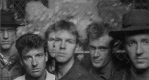
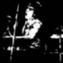
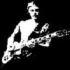
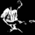
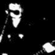

|

In 1972 Farm was formed by school mates Jim Moginie (gtr/kybrd) and Rob Hirst (drums) with Andrew "Bear" James (bass) to tour the Australian coastal towns during Uni holidays. In '76 Farm expanded with the arrival of Martin Rotsey and also Peter Garrett, while in the same year they changed their name to Midnight Oil. '76 was really the formative year for the band, as this was also the year they met their long-time manager Gary Morris - oft regarded as the sixth member of Midnight Oil (indeed credited on Scream In Blue as a band member for Business).
 |

 |
'76 may have been the formative year, but '77/78 were years of expansion for the band. Originally playing around Sydney, they started moving to other cities in Australia, rapidly becoming popular as the importance of punk spread. It was also in 1978 that the Oils set up their own Powderworks label to release their eponymous debut album (due to unhappiness with terms and conditions offered by established labels). The debut was recorded in 10 days and produced by Keith Walker and the band. It was released in November, the month that saw the beginning of Midnight Oil's long career of important benefit gigs. It wasn't long before the Oils released another album, Head Injuries, produced by Les Karski, and taking 10 weeks to record in '79 (hardly comparable to the 10 days of their debut) |
 |
1980 saw a change in Midnight Oil. Touring caused health problems for James, resulting in him leaving in April. He was replaced by Peter Gifford in time to record the Bird Noises EP which was released at the end of the year. (Surprisingly it was this EP which saw the beginnings of radio popularity for the band.) Before long the band headed off to England where they went to the studios of Glyn Johns to record their third full length album, Place Without A Postcard. Their unconventional approach to record company marketing strategies again held back Midnight Oil. They were offered the opportunity to release Place... on A&M on the condition that they record another single or two. They refused and so the album was only released in Australia. |
| A return to England in late '82 was more successful for the Oils. It was the first of a number of collaborations with producer Nick Launay, and the sessions yielded the highly politically motivated 10,9,8,7,6,5,4,3,2,1 album. Perhaps their best moment of '82, but it only just overshadows what could be seen as a sigh for the band. After a night supporting The Who (an early influence of Rob Hirst), they were offered a support slot on The Who's upcoming American tour. Despite the attraction, the band declined. Instead they returned home to tour in support of the new album - the album which many believe made the band stars back home. They toured through '83, playing multiple benefits along the way. |
 |
| The band's next collaboration with Nick Launay took place during mid-'84 in Tokyo. The album formed reflects much of Peter Garrett's time spent in that. He was a regular visitor to Hiroshima where he met survivors of the atomic bomb in 1945. Red Sails In The Sunset dealt with the nuclear issue in a big way, with songs like Harrisburg openly telling the Oils' message. The time was to shape Peter. By the end of '84 he was standing for the Australian Senate on behalf of the NDP (Nuclear Disarmament Party). Although he was unsuccessful vote-wise, the campaign was definitely a success, as it brought nuclear issues a little more into the public's view. 1985 was mostly lent over to touring and campaigning. Peter and the band continued to support the nuclear issues, but also moved towards ecological campaigning. The end of the year saw the release of the similarly themed Species Deceases EP (recorded earlier in the year in Sydney). |
 |
| 1986 was, in effect, the calm before the storm of the following years. Their perspective on issues was turned towards their homeland. This had been touched on in the past (possibly most starkly in Jimmy Sharman's Boxers from Red Sails in the Sunset). A seed was sown with the recording of The Dead Heart, a single which was used in a documentary on the return of Uluru (Ayer's Rock) to it's Aboriginal owners. During July, the Oils announced an inland tour to the outback where they would play to the Aborigines. Some new material came about from the tour, and the band were inspired to write more upon their return home. By mid 1987, an album of pure genius was born. Diesel and Dust was a runaway success. Beds are Burning was an amazing hit single in many countries, with lyrics sparking the hearts of many. The band hit the road until well into '88. And the touring caused the re-occurrence of an old fate. Peter Gifford succumbed to the road life, and had to be replaced by Dwayne (aka "Bones") Hillman. By early '89 they were ready to record again. |
 |
| Blue Sky Mining was an album of similar feel to Diesel, yet it's lyrical stance was somehow different. Rather than take the easy way out and simply write Diesel 2, the band managed to record an album that was a recognizable follow-up but was more than just a re-hash. The album's success matched that of Diesel, and so did the scale of touring which followed. The highlight of the touring was undoubtedly the Exxon protest concert in Manhattan. The concert was spontaneously conducted on the back of a flat-back truck, to protest at the oil spill caused by the Exxon Valdez in Prince William Sound in Alaska. The concert was successful in making a point to the world, and a video doco on the concert was sold with proceeds going to Greenpeace. |
 |
'91 was officially a year off for the band, but being the restless souls that they are, the time was not without work.  Many benefit gigs were undertaken, and Peter did a stint as president of the Australian Conservation Foundation.
Many benefit gigs were undertaken, and Peter did a stint as president of the Australian Conservation Foundation.  Towards the end of the year, the band got together to compile Scream in Blue, the bands live album. It was released in 1992, as the band began work on their ninth studio album, Earth and Sun and Moon. At the end of the year they were ready to record again, and decided to join up once more with Nick Launay. The album was recorded in an analogue studio, mainly using live recording techniques. After the almost studio perfect sounds of Diesel and Blue Sky, the new album was a welcome burst of raw music. From the count-ins on some songs, to the dropping of a tambourine on Tell Me The Truth, the only Oils album that sounded more live than this was Scream In Blue! While the album was well received, singles weren't as plentiful (they hardly scratched the top ten in the UK). The band once more embarked on a world tour. And the story ends here.
Towards the end of the year, the band got together to compile Scream in Blue, the bands live album. It was released in 1992, as the band began work on their ninth studio album, Earth and Sun and Moon. At the end of the year they were ready to record again, and decided to join up once more with Nick Launay. The album was recorded in an analogue studio, mainly using live recording techniques. After the almost studio perfect sounds of Diesel and Blue Sky, the new album was a welcome burst of raw music. From the count-ins on some songs, to the dropping of a tambourine on Tell Me The Truth, the only Oils album that sounded more live than this was Scream In Blue! While the album was well received, singles weren't as plentiful (they hardly scratched the top ten in the UK). The band once more embarked on a world tour. And the story ends here.
Or does it. After touring for what may have seemed like an eternity, the band took another year off. Many thought that this spelled the end of the band, and indeed they seemed to be more strict about their vacation this time. In that time however, a dedicated Web site for the band was set up. In April 1996, the band reconvened to work again. Yet the naysayers still said that they were finished. Now, it's a case of waiting to find out....
Was the wait worth it? The fans seemed to think so. The Oils' return came  with the single Underwater released in Australia in late August. The band embarked on a short club tour, playing only a few gigs in the States and Europe in Sept/Oct. On the 7th of September, Breathe was released to some of the world, and was accepted as another great Oils album. Dismay from many fans at the lack of local gigs was partly dispelled by the relaxing of the usual no-photos rule at some gigs, and many photos were posted to the web by hardworking fans. Most recently there has been talk of a new album early in 97 and a long world tour from April to November.
with the single Underwater released in Australia in late August. The band embarked on a short club tour, playing only a few gigs in the States and Europe in Sept/Oct. On the 7th of September, Breathe was released to some of the world, and was accepted as another great Oils album. Dismay from many fans at the lack of local gigs was partly dispelled by the relaxing of the usual no-photos rule at some gigs, and many photos were posted to the web by hardworking fans. Most recently there has been talk of a new album early in 97 and a long world tour from April to November.
The world tour never happened. The band played some more Aussie gigs as well as a few shows in the US  before returning to Australia for some more shows. A European tour was arranged but was cancelled due to unknown reasons (though rumours put it down to both family illness and a desire to proceed with the new album). The "new" album, 20,000 Watt RSL finally came out in October 97, but only contained two new tracks. The album was in fact a collection of Oils tracks the band had put together (stressing that it was not a greatest hits!), and was released with a video compilation of the same name. However there was welcome news of renewed touring in Oz, coupled with the promise of a new album in April/May of 98.
before returning to Australia for some more shows. A European tour was arranged but was cancelled due to unknown reasons (though rumours put it down to both family illness and a desire to proceed with the new album). The "new" album, 20,000 Watt RSL finally came out in October 97, but only contained two new tracks. The album was in fact a collection of Oils tracks the band had put together (stressing that it was not a greatest hits!), and was released with a video compilation of the same name. However there was welcome news of renewed touring in Oz, coupled with the promise of a new album in April/May of 98.